Bachelor of Veterinary Medical Science
University of Sadat City • Egypt
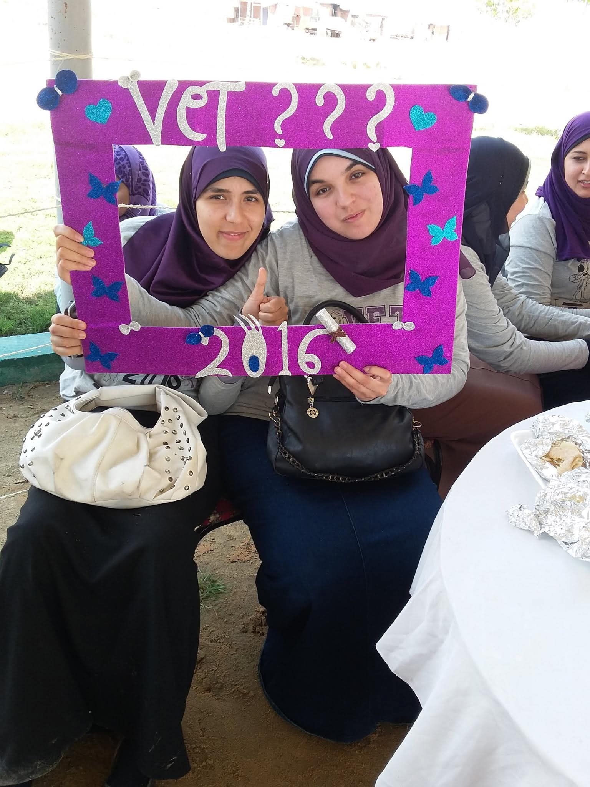
Master of Animal Biomedical Sciences
IPB University • Indonesia
Research Thesis
Analysis of beta-lactam antibiotic resistance genes in Escherichia coli isolated from dairy cattle manure.
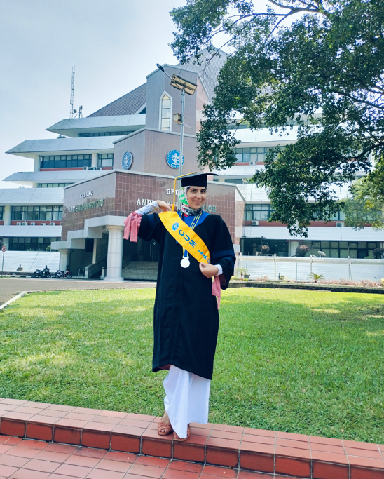
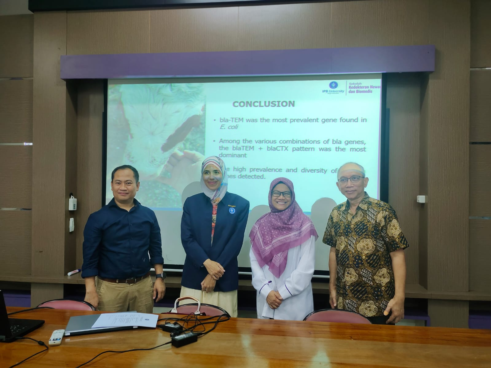
Research Experience
First Stage Researcher (R1)
Oct 2023 – Dec 2023 | BPMSPH, Bogor, IndonesiaConducted molecular characterization of E. coli isolates using Real-time PCR. Analyzed resistance patterns using R software for statistical interpretation of microbiological data. Documented research findings in peer-reviewed publication.
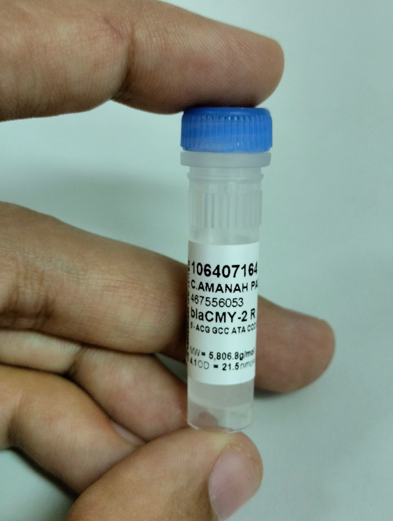
Research Assistant
Jan 2023 – Mar 2024 | IPB UniversityPerformed bacteriological examination, including culture and IMViC tests, to obtain bacterial isolates for PCR-based detection of antibiotic resistance genes.
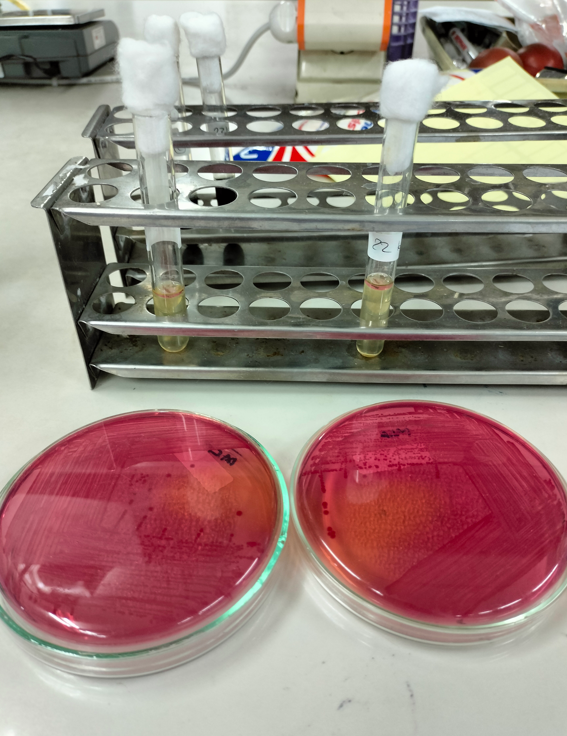
Research Assistant
Jul 2020 – Jul 2021 | University of Sadat City, EgyptPerformed ultrasonographic imaging of camel distal limb. Correlated anatomical structures with diagnostic imaging for veterinary applications.
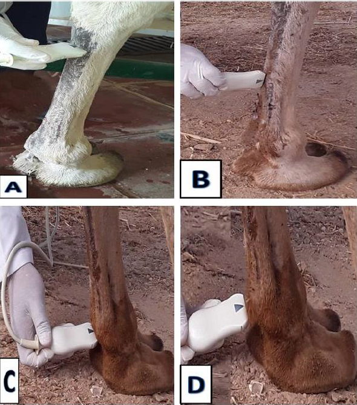
Teaching Experience
Volunteer English Teacher
2021 – Present | Resala Charity OrganizationTaught English to visually impaired students using audio-based and tactile learning tools. Recorded audiobooks and designed accessible educational materials.
English Tutor (Part Time)
Jan 2023 – May 2024 | Various Schools & OnlineDelivered customized English instruction for primary students (ages 6–12). Coordinated with schools and provided progress reports.
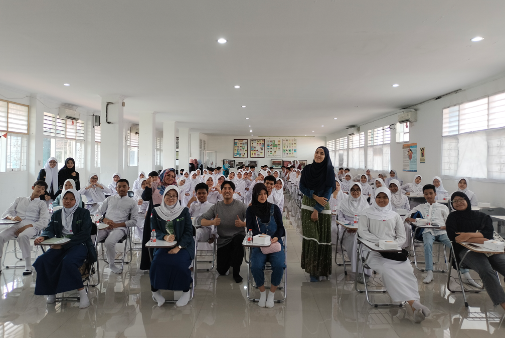
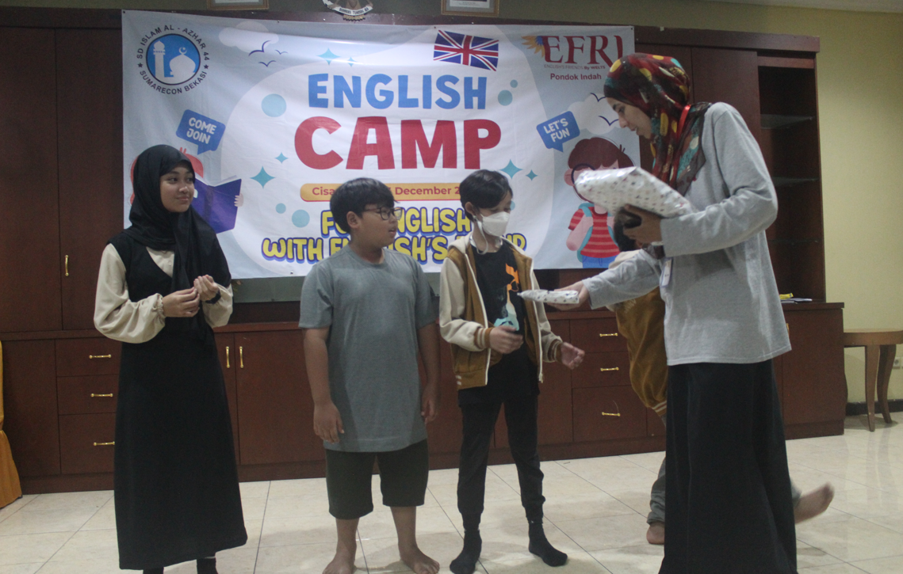
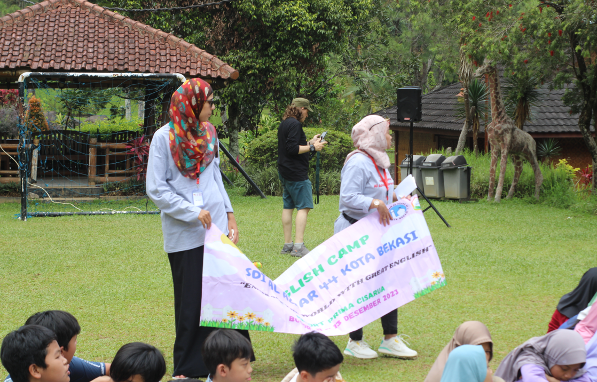
Work Experience
Owner & Lead Veterinarian
2024 – Present | Animal Planet Veterinary Clinic, EgyptFounded and manage a veterinary clinic providing comprehensive care for companion animals and livestock. Conduct clinical examinations, diagnose diseases, and provide preventive healthcare services. Manage clinic operations and client communication.
Veterinarian
2019 – 2021 | VetHouse Veterinary ClinicPerformed minor surgical procedures and clinical treatments for small animals. Provided poultry farm consultations and disease outbreak investigations.
Veterinarian
2017 – 2019 | Pets Corner Veterinary ClinicDelivered veterinary care for companion animals. Conducted farm visits and post-mortem examinations for disease diagnosis.
Publications
Green Tea Bioactives and Fish Oil Components as Modulators of Endogenous Antioxidant Enzymes: A Molecular Docking Study
BIO Web Conf., 248 (2026) 04001
DOI / https://doi.org/10.1051/bioconf/202624804001Detection of tetracycline resistance genes in Escherichia coli isolated from dairy cattle feces in Bogor City
Jurnal Veteriner dan Biomedis (2026)
DOI / https://doi.org/10.29244/jvetbiomed.4.1.21-27Detection of quinolone antibiotic resistance genes in Escherichia coli isolated from dairy cattle feces.
Current Biomedicine (2026)
DOI / https://doi.org/10.29244/jvetbiomed.4.1.21-27Prevalence of Escherichia Coli O157 strain isolated from dairy cattle manure in Bogor, Indonesia.
Revista de Ciências Agroveterinárias (2025)
DOI / https://doi.org/10.5965/223811712432025575Analysis of beta-lactam antibiotic resistance genes in Escherichia coli isolated from dairy cattle manure in Bogor, Indonesia
German Journal of Veterinary Research (2024)
DOI / https://doi.org/10.51585/gjvr.2024.3.0094Ultrasonographic description of tendons and ligaments at the palmar (plantar) aspect of the distal limb in the one humped camel (Camelus dromedarius).
Australian Veterinary Journal (2023)
DOI / https://doi.org/10.1111/avj.13268Awards & Honors
Best Presenter Award
Best Presenter Award in the 7th International Hybrid Short Course on Exotic Animal Nutrition and Feed Technology.
Presented Paper:
"Synergistic Effect of Probiotics and Macroalgae as Feed Supplements
on Dairy Performance and Methane Emission Reduction"
University Consortium (UC) Student Thesis Grant
University Consortium (UC) Student Thesis Grant for Research Activities, awarded by the Southeast Asian Regional Center for Graduate Study and Research in Agriculture (SEARCA).
Research Supported:
"Analysis of beta-lactam antibiotic resistance genes in
Escherichia coli isolated from dairy cattle manure in Bogor,
Indonesia"
Grant Amount: 15,000,000 IDR
First Winner – Nutrition & Feed Technology Competition
First Winner in the Best Presentation Category in the Student Competition of Nutrition and Feed Technology (NuFet 2022).
Presented Paper:
"Comparison of Legume Forage Production and Nutritive Value for
Dairy Production from Temperate and Tropical Climates"
Best Student – Third Winner
Third Winner in the Best Student Category in the E-Summer Course Business Innovation and Management (BIM) 2022, IPB University, Indonesia.
CertificateBest Three-Minute Thesis (3MT) – Third Winner
Third Winner in the Best Three-Minute Thesis (3MT) Category in the International Competition E-Summer Course Business Innovation and Management (BIM).
Presented Paper:
"Management of Animal Manure as a Form of Implementation
of the Circular Economy"
KNB Scholarship
Indonesian Government Scholarship for a Master’s Degree, awarded through the Kemitraan Negara Berkembang (KNB) Scholarship Program.
Program:
Indonesian Language (Bahasa) Program, September 2021, followed
by the Master’s Program in Veterinary Biomedical Sciences at
IPB University, August 2022 – July 2024.
Projects

Antibiotic Resistance Analysis
Molecular study of E. coli resistance patterns in dairy cattle using qPCR and R analysis.

Camel Limb Ultrasonography
Anatomical and imaging-based study of camel distal limb tendons and ligaments.

One Health Surveillance
Integrated veterinary and public health approach to monitor zoonotic risks.
Workshops & Courses
Basic Lab 12 in Scientific Research
May 2026 | Egypt Scholars Inc.Master Microsoft Power BI
Aug 2025 | AlisonMcKinsey.org Forward Program
Jul 2025 | McKinsey.orgAI-Augmented Professional Skills
Nov 2024 | African Leadership XResponsible Use of Antibiotics in Livestock
Dec 2024 | FAO Learning AcademyScientific Publication Training
Jun 2023 | IPB UniversitySkills
Research & Laboratory
Quantitative Research Design
Molecular Microbiology (qPCR, DNA Extraction)
Antimicrobial Susceptibility Testing
Data Analysis & Tools
R Programming
SPSS Analysis
Microsoft Excel
Soft Skills
Scientific Writing
Public Speaking
Team Collaboration
Conferences
The First International Conference on the Science of Happiness
Role: Presenter
- Presented on “Social Media’s Detrimental Effects on Rural Egyptian Well-being”, highlighting digital inequalities and their impact on mental health.
- Proposed strategies for empowering rural communities in Egypt through digital literacy and policy recommendations.
- Engaged in discussions on happiness science, community resilience, and the role of arts and politics in well-being.
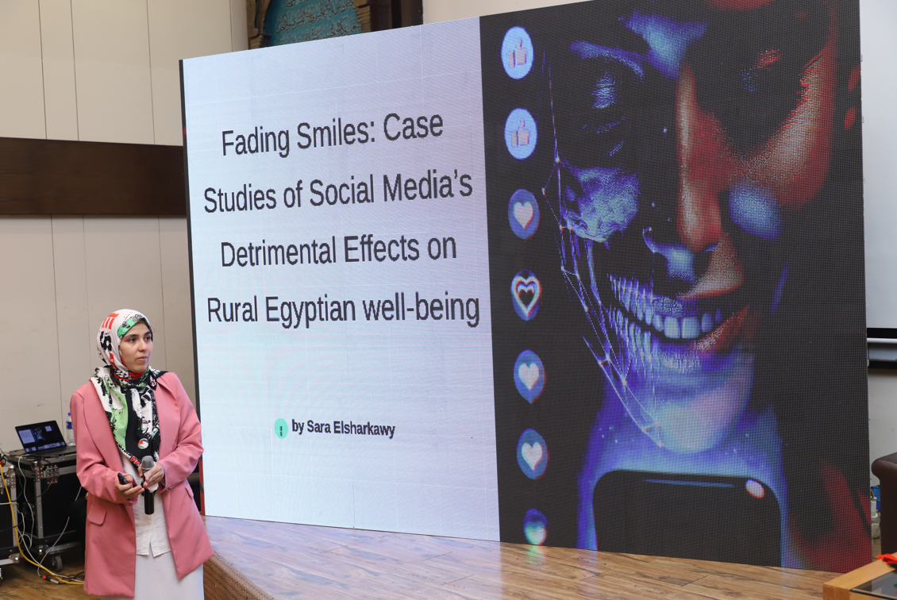
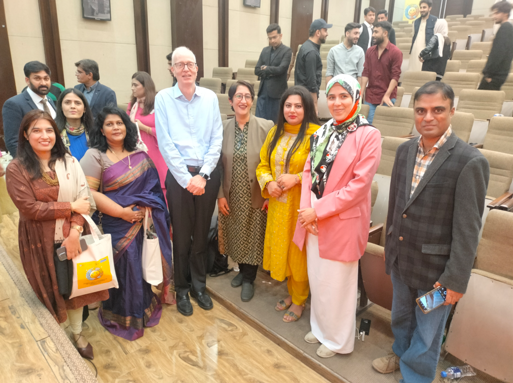
🌍 International Engagement
UMi International Camp 2023
Universitas Negeri Malang, IndonesiaParticipated in the Universitas Negeri Malang International Camp, a university-sponsored cultural exchange program that brought together students from different countries. The program promoted intercultural understanding through Indonesian traditional arts, cuisine, music, painting, and cultural performances while fostering global friendships and collaboration.
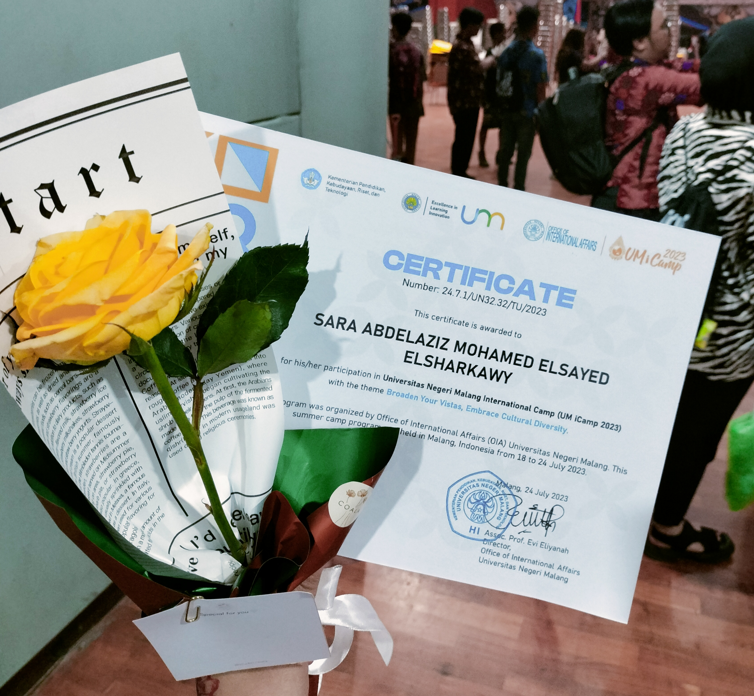
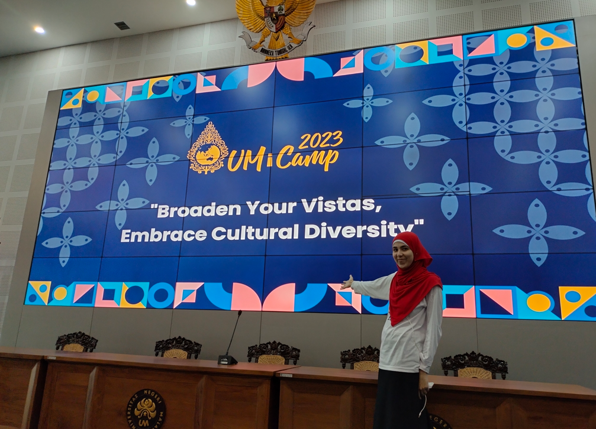
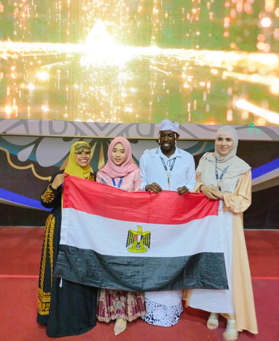
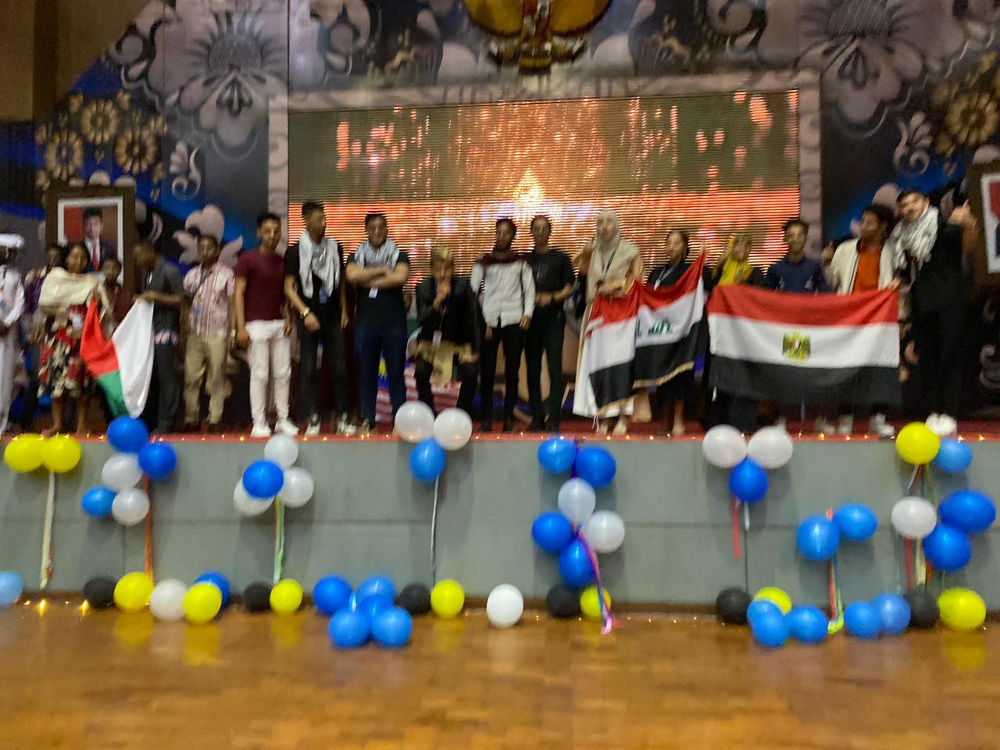
International Student Summit (ISS) 2022
Universitas Muhammadiyah Malang, IndonesiaParticipated in the International Student Summit for KNB Scholarship Awardees under the theme "Cultural Diversity and Inclusiveness: Reducing the Gaps." The event gathered international students from more than 40 countries and featured cultural exchange activities, workshops, competitions, and discussions promoting global cooperation.
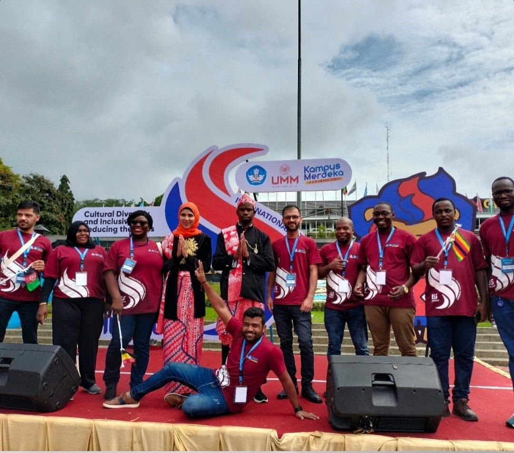
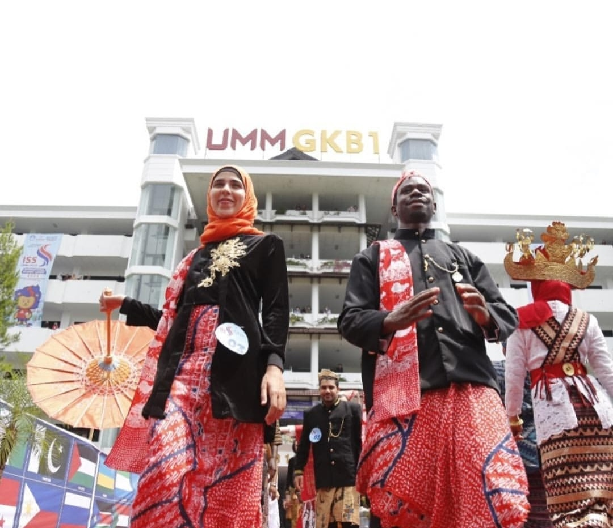
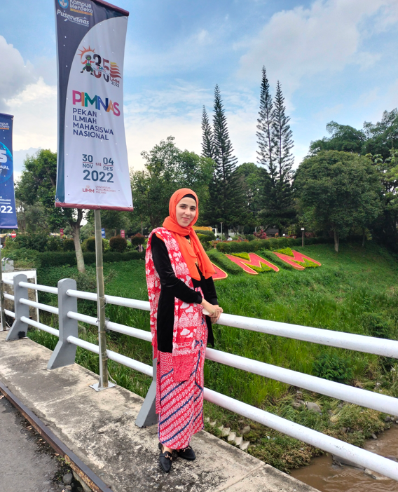
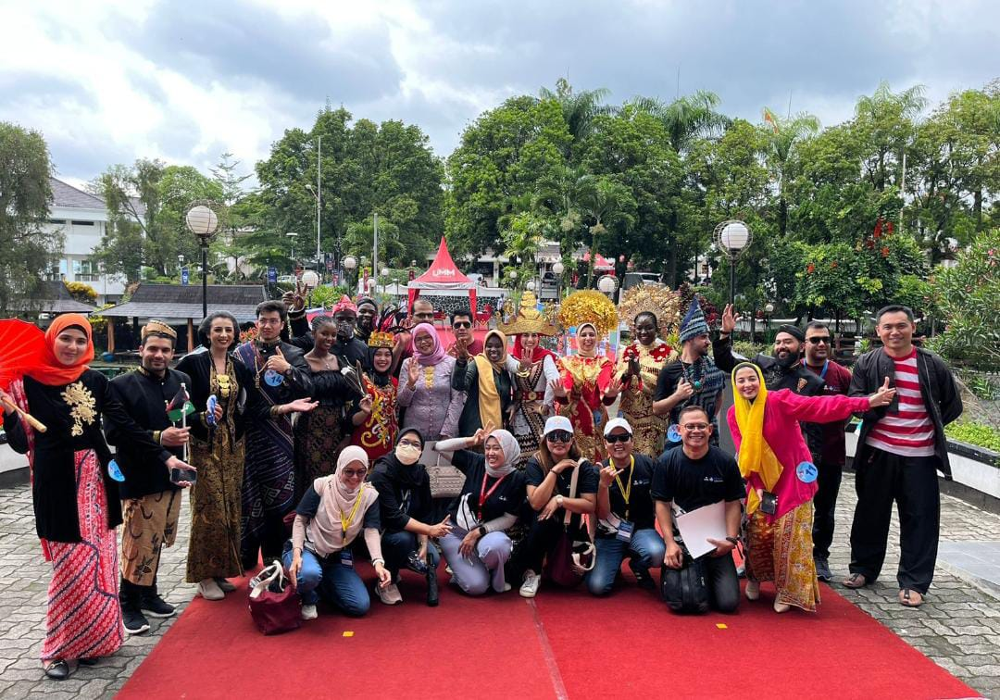
Global Academic & Professional Footprint
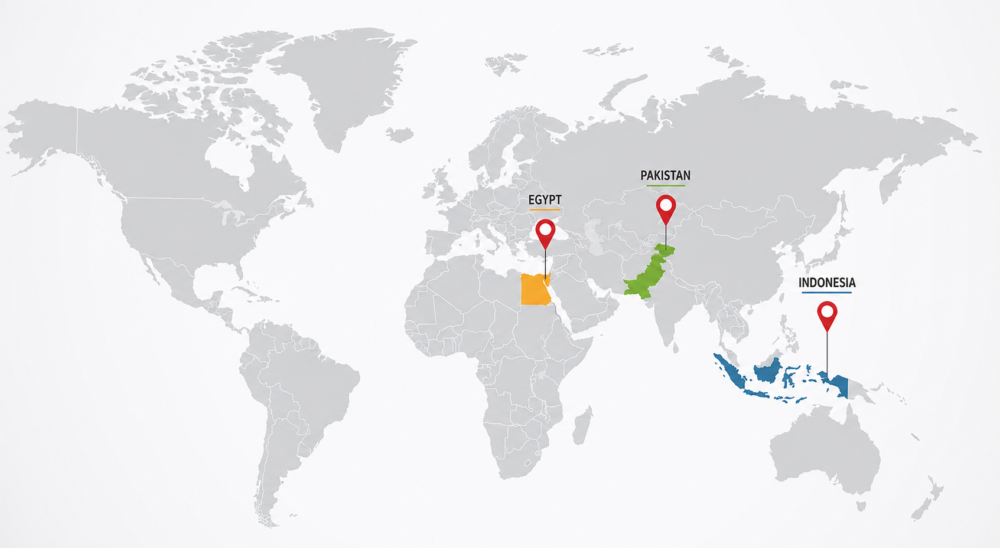
Languages
Contact Me
Feel free to reach out for collaborations, research opportunities, or academic discussions.